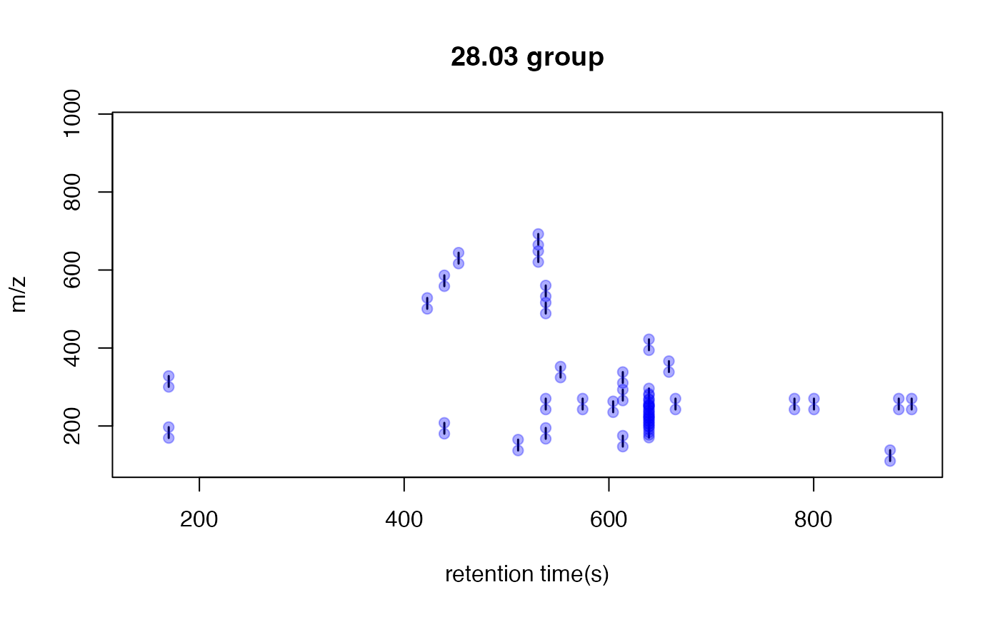

Paired Mass Distance(PMD) analysis for GC/LC-MS based non-targeted analysis
Miao Yu
2018-10-29
globalstd.RmdIntroduction of Paired Mass Distance analysis
pmd package use Paired Mass Distance (PMD) relationship to analysis the GC/LC-MS based non-targeted data. PMD means the distance between two masses or mass to charge ratios. In mass spectrometry, PMD would keep the same between two masses or two mass to charge ratios(m/z). There are twe kinds of PMD involved in this package: PMD within same retention time group and PMD from different retention time groups.
PMD within same retention time group
In GC/LC-MS based non-targeted analysis, peaks could be seperated by chromatograph. We could build retention time(RT) bins to assign peaks into different RT groups by retention time hierarchical clustering analysis. For each RT group, the peaks should come from same compounds or co-elutes. If certain PMD appeared in multiple RT groups, it would be related to the relationship about adducts, neutral loss, isotopologues or commen fragments ions.
PMD from different retention time groups
The peaks from different retention time groups would like to be different compounds seperated by chromatograph. The PMD would reflect the relationship about homologous series or chemical reactions.
GlobalStd algorithm use the PMD within same RT group to find independent peaks among certain dataset. Structure/reaction directed analysis use PMD from different RT groups to screen important compounds or reactions.
Data format
The input data should be a list object with at least two elements from a peaks list:
- mass to charge ratio with name of
mz, high resolution mass spectrometry is required - retention time with name of
rt
However, I suggested to add intensity and group information to the list for validation of PMD analysis.
In this package, a dataset from in vivo solid phase micro-extraction(SPME) was attached. This dataset contain 9 samples from 3 fish with triplicates samples for each fish. Here is the data strcture:
library(pmd)
data("spmeinvivo")
str(spmeinvivo)
#> List of 4
#> $ data : num [1:1459, 1:9] 1095 10439 10154 2797 90211 ...
#> ..- attr(*, "dimnames")=List of 2
#> .. ..$ : chr [1:1459] "100.1/170" "100.5/86" "101/85" "103.1/348" ...
#> .. ..$ : chr [1:9] "1405_Fish1_F1" "1405_Fish1_F2" "1405_Fish1_F3" "1405_Fish2_F1" ...
#> $ group:'data.frame': 9 obs. of 1 variable:
#> ..$ class: Factor w/ 3 levels "fish1","fish2",..: 1 1 1 2 2 2 3 3 3
#> $ mz : num [1:1459] 100 101 101 103 104 ...
#> $ rt : num [1:1459] 170.2 86.3 84.9 348.1 48.8 ...You could build this list object from the xcms objects via enviGCMS package. When you have a xcmsSet object or XCMSnExp object named xset, you could use enviGCMS::getmzrt(xset) or enviGCMS::getmzrt2(xset) to get such list. Of course you could build such list by yourself.
GlobalStd algorithm
GlobalStd algorithm try to find independent peaks among certain peaks list. The first step is retention time hierarchical clustering analysis. The second step is to find the relationship among adducts, neutral loss, isotopologues and commen fragments ions. The third step is to screen the independent peaks.
Retention time hierarchical clustering
pmd <- getpaired(spmeinvivo, rtcutoff = 10, ng = 10)
#> 75 retention time cluster found.
#> 443 paired masses found
#> 10 unique PMD(s) used for further investigation.
#> 631 isotopologue(s) related paired mass found.
#> 685 multi-charger(s) related paired mass found.
plotrtg(pmd)
This plot would show the distribution of RT groups. The rtcutoff in function getpaired could be used to set the cutoff of the distances in retention time hierarchical clustering analysis.
Relationship among adducts, neutral loss, isotopologues and commen fragments ions
The ng in function getpaired could be used to set cutoff of global PMD’s retention time group numbers. If ng is 10, at least 10 of the retention time groups should contain the shown PMD relationship. You could use plotpaired to show the distribution.

You could also show the distribution of PMD relationship by index:
# show the unique PMD found by getpaired function
for(i in 1:length(unique(pmd$paired$diff2))){
diff <- unique(pmd$paired$diff2)[i]
index <- pmd$paired$diff2 == diff
plotpaired(pmd,index)
}


Screen the independent peaks
You could use getstd function to get the independent peaks.
std <- getstd(pmd)
#> 11 group(s) with multiple peaks while no isotope/paired relationship
#> 8 group(s) with multiple peaks with isotope without paired relationship
#> 4 group(s) with paired relationship without isotope
#> 44 group(s) with paired relationship and isotope
#> 277 std mass found.
#> 8 retention group(s) have single peaks.Here you could plot the peaks by plotstd function to show the distribution of independent peaks:

You could also plot the peaks distribution by assign a retention time group via plotstdrt:
par(mfrow = c(2,3))
plotstdrt(std,rtcluster = 23,main = 'Retention time group 23')
plotstdrt(std,rtcluster = 9,main = 'Retention time group 9')
plotstdrt(std,rtcluster = 18,main = 'Retention time group 18')
plotstdrt(std,rtcluster = 67,main = 'Retention time group 67')
plotstdrt(std,rtcluster = 49,main = 'Retention time group 49')
plotstdrt(std,rtcluster = 6,main = 'Retention time group 6')
Validation by principal components analysis(PCA)
You need to check the GlobalStd algorithm’s results by principal components analysis(PCA).
library(enviGCMS)
par(mfrow = c(1,2),mar = c(4,4,2,1)+0.1)
plotpca(std$data,lv = as.numeric(std$group$class),main = substitute(paste(italic('in vivo'), " SPME samples(all peaks)")))
plotpca(std$data[std$stdmassindex,],lv = as.numeric(std$group$class),main = substitute(paste(italic('in vivo'), " SPME samples(selected peaks)")))
Structure/reaction directed analysis
getsda function could be used to perform Structure/reaction directed analysis. freqcutoff could be used to filter the PMD with high frequncy.
sda <- getsda(std, freqcutoff = 10)
#> 19 groups were found as high frequency PMD group.
#> 0 were found as high frequency PMD.
#> 1.98 were found as high frequency PMD.
#> 2.02 were found as high frequency PMD.
#> 12 were found as high frequency PMD.
#> 13.98 were found as high frequency PMD.
#> 14.02 were found as high frequency PMD.
#> 14.05 were found as high frequency PMD.
#> 15.99 were found as high frequency PMD.
#> 16.03 were found as high frequency PMD.
#> 28.03 were found as high frequency PMD.
#> 30.05 were found as high frequency PMD.
#> 42.05 were found as high frequency PMD.
#> 49.02 were found as high frequency PMD.
#> 58.04 were found as high frequency PMD.
#> 66.05 were found as high frequency PMD.
#> 68.06 were found as high frequency PMD.
#> 82.08 were found as high frequency PMD.
#> 116.08 were found as high frequency PMD.
#> 126.14 were found as high frequency PMD.You could use plotstdsda to show the distribution of the selected paired peaks.

You could also use index to show the distribution of certain PMDs.
par(mfrow = c(2,3),mar = c(4,4,2,1)+0.1)
plotstdsda(sda,sda$sda$diff2 == 0)
plotstdsda(sda,sda$sda$diff2 == 13.98)
plotstdsda(sda,sda$sda$diff2 == 15.99)
plotstdsda(sda,sda$sda$diff2 == 14.02)
plotstdsda(sda,sda$sda$diff2 == 28.03)
plotstdsda(sda,sda$sda$diff2 == 58.04)
Structure/reaction directed analysis could be directily performed on all the peaks, which is slow to process:
sdaall <- getsda(spmeinvivo)
par(mfrow = c(2,3),mar = c(4,4,2,1)+0.1)
plotstdsda(sdaall,sdaall$sda$diff2 == 0)
plotstdsda(sdaall,sdaall$sda$diff2 == 13.98)
plotstdsda(sdaall,sdaall$sda$diff2 == 15.99)
plotstdsda(sdaall,sdaall$sda$diff2 == 14.02)
plotstdsda(sdaall,sdaall$sda$diff2 == 28.03)
plotstdsda(sdaall,sdaall$sda$diff2 == 58.04)Wrap function
globalstd function is a wrap funtion to process GlobalStd algorithm and structure/reaction directed analysis in one line. All the plot function could be directly used on the list objects from globalstd function.
result <- globalstd(spmeinvivo)
#> 75 retention time cluster found.
#> 443 paired masses found
#> 10 unique PMD(s) used for further investigation.
#> 631 isotopologue(s) related paired mass found.
#> 685 multi-charger(s) related paired mass found.
#> 11 group(s) with multiple peaks while no isotope/paired relationship
#> 8 group(s) with multiple peaks with isotope without paired relationship
#> 4 group(s) with paired relationship without isotope
#> 44 group(s) with paired relationship and isotope
#> 277 std mass found.
#> 8 retention group(s) have single peaks.
#> 19 groups were found as high frequency PMD group.
#> 0 were found as high frequency PMD.
#> 1.98 were found as high frequency PMD.
#> 2.02 were found as high frequency PMD.
#> 12 were found as high frequency PMD.
#> 13.98 were found as high frequency PMD.
#> 14.02 were found as high frequency PMD.
#> 14.05 were found as high frequency PMD.
#> 15.99 were found as high frequency PMD.
#> 16.03 were found as high frequency PMD.
#> 28.03 were found as high frequency PMD.
#> 30.05 were found as high frequency PMD.
#> 42.05 were found as high frequency PMD.
#> 49.02 were found as high frequency PMD.
#> 58.04 were found as high frequency PMD.
#> 66.05 were found as high frequency PMD.
#> 68.06 were found as high frequency PMD.
#> 82.08 were found as high frequency PMD.
#> 116.08 were found as high frequency PMD.
#> 126.14 were found as high frequency PMD.Shiny application
An interactive document has been included in this package to show PMD analysis. You could run runPMD() to start the Graphical user interface(GUI) for GlobalStd algorithm and structure/reaction directed analysis. You need to prepare a csv file with m/z and retention time of peaks. Such csv file could be generated by run enviGCMS::getmzrtcsv() on the list object from enviGCMS::getmzrt(xset) or enviGCMS::getmzrt2(xset) function. You could also generate the csv file by enviGCMS::getmzrt(xset,name = 'test') or enviGCMS::getmzrt2(xset, name = 'test'). You will find the csv file in the working dictionary named test.csv.